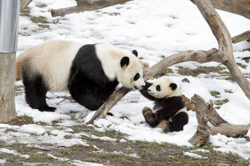
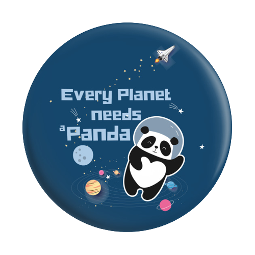
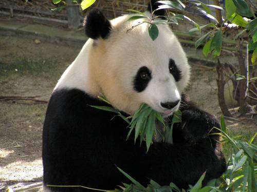

 Большая панда – это тихое существо в характерном
черно-белом костюме, широко обожаемое во всем мире. Также
панда считается национальным достоянием в Китае. Для WWF (всемирного фонда дикой природы) панда имеет особое
значение, поскольку с 1961 года, момента основания этой организации, она изображена на их логотипе.
Большая панда считается редким животным в Китае, а ее популяция ограничена провинциями Ганьсу, Сычуань,
Шаньси в центральной части страны. Общий ареал охватывает 29,5 тыс км², но только 5,9 тыс км² являются
диапазоном обитания большой панды.

Большая панда обитает в смешанных хвойных, горных и широколиственных лесах, где присутствует бамбук.
В целом, большие панды имеют круглую голову, коренастое тело и короткий хвост. Высота в плечах составляет
65-70 см. Эти животные хорошо известны благодаря характерным черным и белым отметинам. Конечности, глаза,
уши и плечи имеют черный окрас, а остальная часть – белая. В некоторых регионах черный цвет на самом деле
имеет темно-красный оттенок. Темные отметины вокруг глаз могут быть причиной популярности этих животных,
давая им наивный, ювенильный вид. Увеличенные плечи и область шеи наряду с уменьшенными задними конечностями
создают иноходь. Бакулюм (кость, которая образовалась в соединительной ткани полового члена) присутствует у
многих других млекопитающих. Тем не менее, у других медведей они прямые и направленные вперед, в то время
как у панд имеют S-образную форму и направлены назад.
Большие панды имеют несколько соединений костей черепа. У них есть большой сагиттальный гребень, который
стал шире и глубже благодаря мощным челюстям. Коренные и малые коренные зубы более широкие и плоские, чем у
других медведей, благодаря чему, панды развили способность измельчать жесткий бамбук. Примечательной
особенностью этих животных выступает дополнительный противопоставленный палец на руке, известный как
«большой палец панды». Это вызвало большую путаницу в прошлом, при классификации этих медведей. На самом
деле это не большой палец, а кожный выступ.

Самки панды в период размножения становятся более активными и используют ароматическую маркировку.
Исследование, проведенное между сексуально активными самками и неактивными пандами предполагает, что
ароматическая маркировка относится к сексуальной активности. Самцы могут конкурировать за самку.
Спаривание происходит с марта по май. Течка у самки длится примерно 1-3 дня. Самки теряют прежнюю активность
в период течки, становятся неспокойными и лишаются аппетита. Большинство детенышей рождаются в конце лета и
начале осени. Беременность длится около 6 недель. При рождении малыши слепые и беспомощные, а их тело
покрыто небольшим слоем меха. Вес новорожденных составляет 85-140 г.
После родов самка-мать помогает малышу лечь в удобное для сосание положение. Детеныш может прикладываться к
матери около 14 раз в день, длительностью до 30 минут за одно вскармливание. Медвежата открывают глаза на 3
неделе жизни, самостоятельно передвигаются в 3-4 месяца, отлучаются от материнского молока приблизительно в
46 недель. Детеныш остается с мамой до 18 месяцев. Большие панды плохо размножаются в неволе.
При изучении поведения гигантских панд в неволе было обнаружено, что в половине случаев рождаются близнецы.
Мать, как правило, отдает предпочтение одному из них, а второй вскоре умирает.